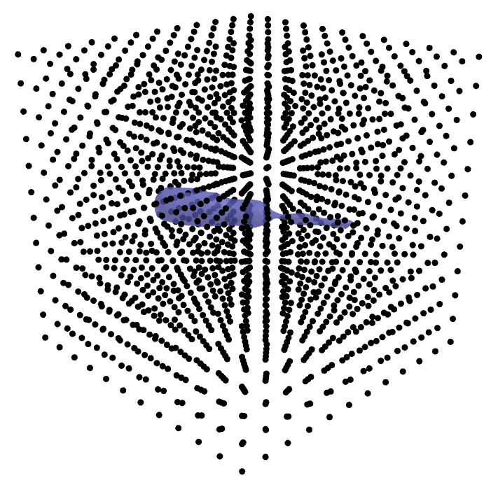
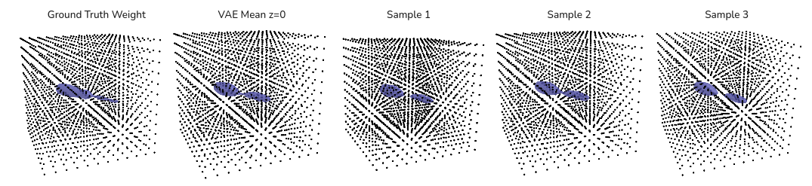
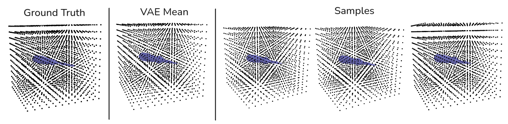
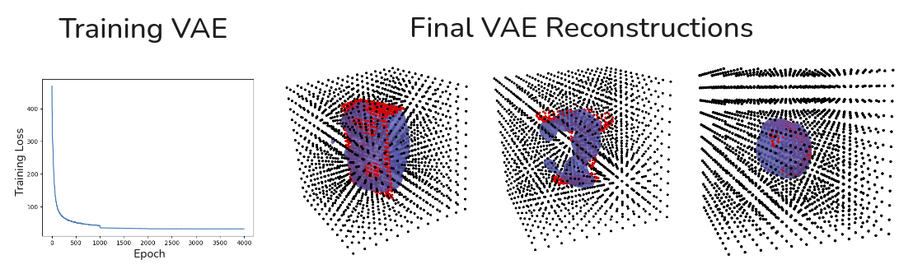
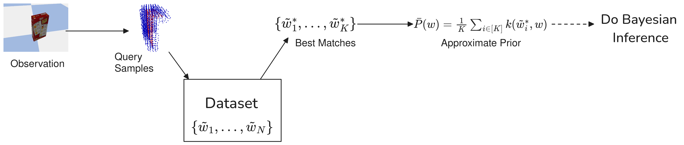
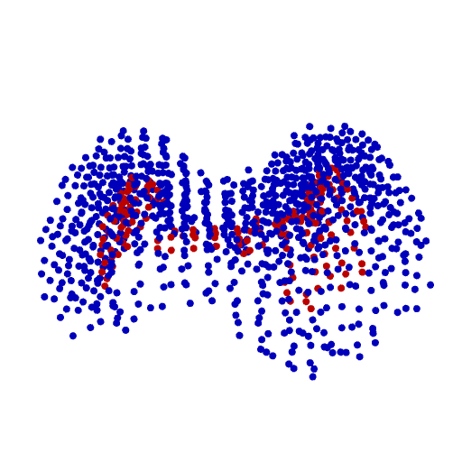
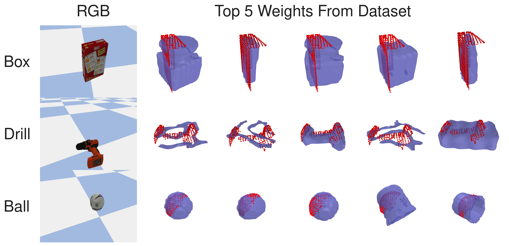
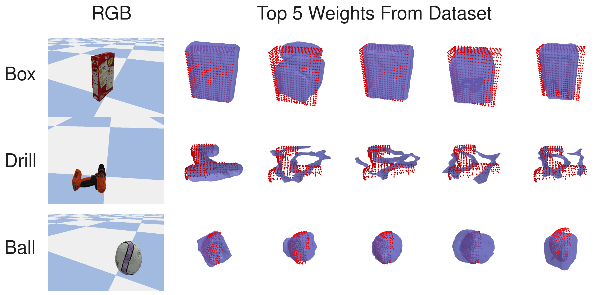
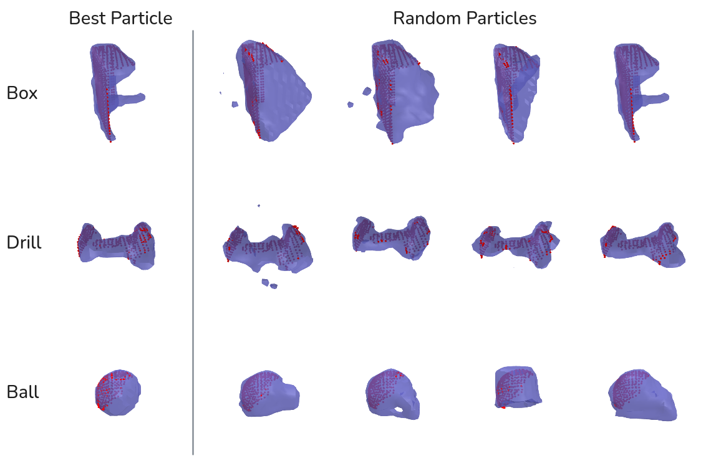

2024 Sep 06
Last time we thought maybe the VAE looked interesting. Instead, because I was having issues with it, me and William decided to try to test an alternate idea
Here is an example of a screw driver reconstruction (weight) in the dataset:

I trained a VAE to go from weight vector to weight vector using the dataset above. I found that as you gave it more data, the quality would degredate. Here is using 11k examples:

This is not great compared to a VAE trained on only 200:

I tried to train up the VAE for a while and take a stab at doing reconstructions with it. This is what those looked like:

Here I optimized the latent code and so gradients went through the decoder of the VAE (regularization on z was included in the loss).
Note: the reconstruction above is with Gradient Descent, not SVGD. Perhaps that would help escape local minima
Consider we have a dataset of N ground truth Hilbert Map weights for objects, \{\tilde w_1, ... \tilde w_N\}. Then, we could imagine defining a prior as the KDE of this dataset: P(w) = \frac{1}{N} \sum_{i \in [N]} k(\tilde w_i, w), where k is likely a Gaussian kernel that is normalized (integrates to 1). Now, if N is really large, it could be computationally intractable to fully compute the Posterior. The insight is that we can develop a good approximate Posterior by selecting a subset of \{\tilde w_i\} to do a KDE prior with: \{\tilde w^*_1, ..., w^*_K\} \subset \{\tilde w_1, ..., \tilde w_N \} In order to ensure that This approximate Posterior is close to the full Posterior (with full KDE prior), we select \tilde w^*_i that we think have a higher likelihood, because the exclusion of these data points will have the biggest effect on the approximate prior (data points with low likelihood being include or excluded will have little effect on the overall distribution). Once we have selected a subset, we have an approximate KDE prior: P(w) \approx \bar P(w) = \frac{1}{K} \sum_{i \in [K]} k(\tilde w_i^*, w), where K << N makes computation of this much faster. We select this subset by taking a small sample of negative points (as a surrogate to the likelihood), and do a linear scan through the dataset to see which K dataset weights score the best (which can take <1 sec for 50k weights of 2k hinge points on the GPU). The below figure is a graphical representation:

After we have an approximate prior, we can run SVGD to recover a Posterior distribution of particles: \ln P(w | D) \approx \ln P(D | w) + \ln \bar P(w) + C. We can initialize our particles with the approximate prior, \hat P(w), which has dataset points with high likelihood already. Thus, we initialize nearer to the Posterior than if we used the full prior, P(w).
In this section, I query the dataset by first selecting a subset of negative sampled points and use these points to compare with the weights in the dataset. I transform these negatively sampled points and find the weights in the dataset that have the best BCE scores on them. Here is an example query point cloud (red is occupied and blue is unoccupied):

We can visualize the “top hits” from the dataset. The following is an image of the best dataset weights according to a not-seen-before view of an object:

Here is 3 more one object scenes of the same object:

For some reason, it seems like the chain reconstructions in the dataset do well with the drill pointcloud. I am not sure why this is.
I run SVGD to reconstruct the 3 objects above. I did a bit of hyperparameter tuning to get it to work. Here are the results:

It seems like the method can kind of reconstruct stuff okay, but there is noise. It does capture diversity. Perhaps if viewed as a distribution, it would look nicer. The best particle for the drill and ball looks good, but the best particle for the box does not.
Here is a table with some of the hyperparameters:
| Parameter | Value |
|---|---|
| optimizer | Adam |
| lr | 0.1 |
| # hinge points | 1729 |
| # of weights in prior | 200 |
| # of particles | 32 |
| dataset # of weights | 41.6k |
I can see some possible ways to go forward:
I have read a line of work that I thought was interesting: